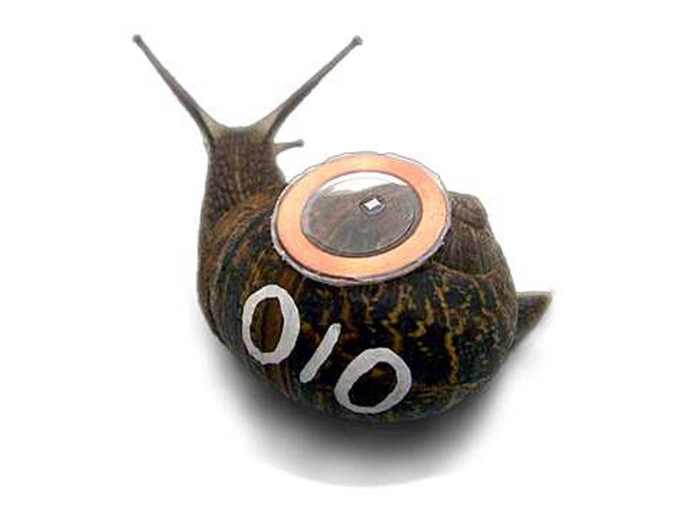
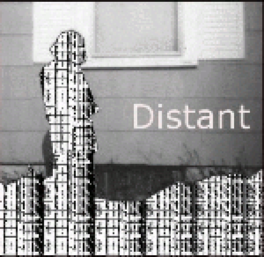
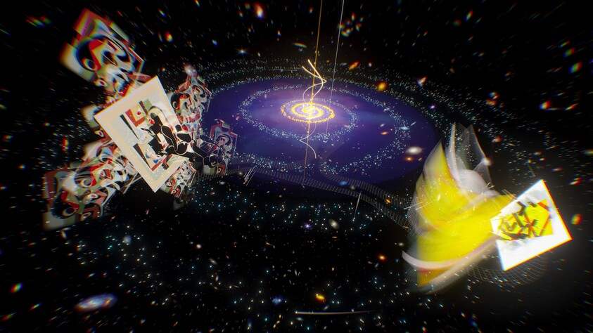
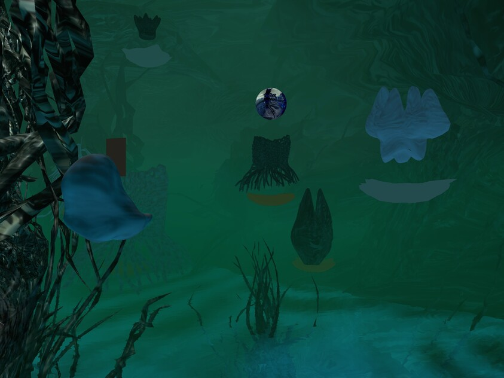
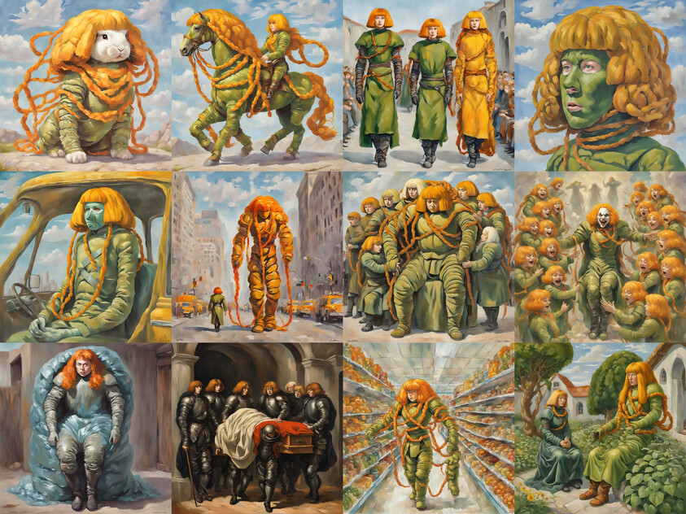
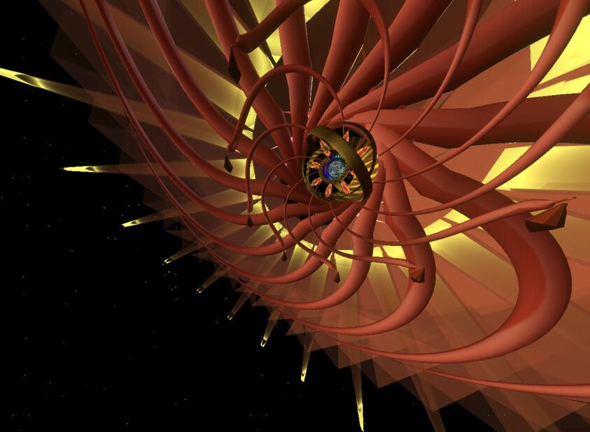
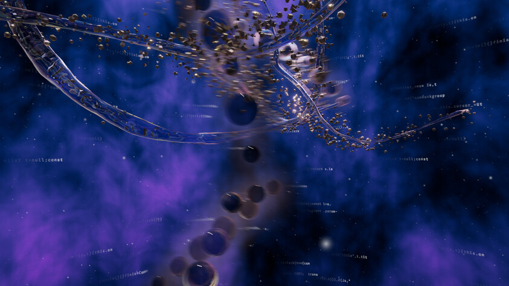
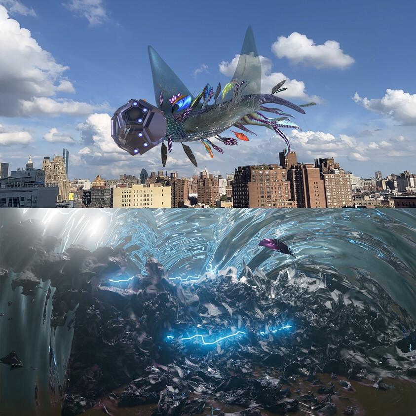
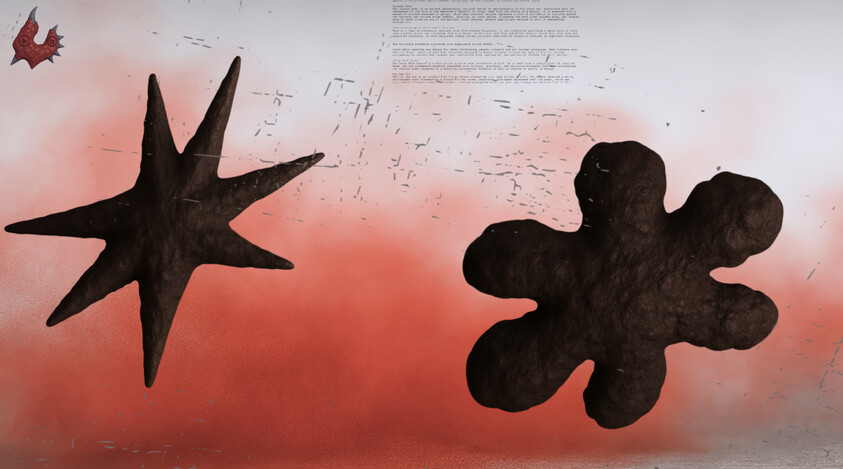
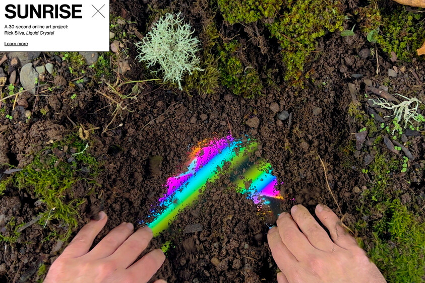

Contemporary Web Art
[01] BOREdomresearch
RealSnailMail
2008

What does the project do?
RealSnailMail is an interactive project that connects the behavior
of real snails with an online environment. The project allows
viewers to observe and interact with the snails remotely.
What makes it web art?
The Internet is an important part of how the artwork is experienced.
The project connects a physical biological system with an online
interactive experience.
[02] MARC GARRETT
Distant
2008

What does the project do?
Distant is a web-based artwork that explores distance and
communication through an online environment.
What makes it web art?
The artwork uses the Internet as part of the experience.
The online environment is not simply a place to display the
artwork; it is part of the artwork itself.
[03] ASHLEY ZELINSKIE
Twin Quasar
2024

What does the project do?
Twin Quasar is a three-dimensional digital artwork that creates
a space viewers can explore. It combines ideas from science and
art history to create a digital environment inspired by space
and physics.
What makes it web art?
Twin Quasar was created to be experienced online. The Whitney
identifies its medium as web-based art and commissioned it for
the museum's artport website.
[04] LEO CASTAÑEDA
Camoflux Recall Grotto
2026

What does the project do?
Camoflux Recall Grotto is a web-based game where players explore
a surreal environment and cultivate a digital garden. Players
collect water and sunlight to grow strange plants called
cyberflora.
What makes it web art?
The artwork is designed to be played through the web. The
Whitney identifies it as web-based art and commissioned it for
its artport website.
[05] HOLLY HERNDON & MAT DRYHURST
xhairymutantx
2024

What does the project do?
xhairymutantx explores artificial intelligence and the images
that AI systems create from training data. The project examines
how an Internet identity can become part of AI-generated images.
What makes it web art?
The project exists as an online experience through the Whitney's
artport website. It uses Internet culture and AI technology as
part of the artwork itself.
[06] AURIEA HARVEY
SITE1
2023

What does the project do?
SITE1 takes viewers through a three-dimensional virtual
environment. The viewer travels through a machine-like space
that transforms into a cave-like environment filled with
characters and virtual objects.
What makes it web art?
SITE1 is a browser-based interactive environment. The Whitney
describes its medium as a web-based interactive environment
using JavaScript.
[07] MEMO AKTEN & KATIE HOFSTADTER
The Thinking Ocean
2026

What does the project do?
The Thinking Ocean creates a digital underwater environment
that combines the movement of water with patterns inspired by
cells, circuitry, and computer code. Viewers can navigate
through the changing environment.
What makes it web art?
The Thinking Ocean is an online digital environment designed
to be experienced through a web browser. The Whitney identifies
it as web-based art and commissioned it for artport.
[08] NANCY BAKER CAHILL
CENTO
2023

What does the project do?
CENTO creates a large augmented-reality creature that viewers
can experience using a smartphone or tablet. Viewers can
interact with the creature and add feathers to its body.
What makes it web art?
CENTO connects digital art with an online and mobile experience.
Viewers access the project through digital technology and
interact with the artwork using augmented reality.
[09] INFANT
BANNED SKILLS
2025

What does the project do?
BANNED SKILLS is a nonlinear online narrative created by the
artist duo INFANT. Users choose between two different paths,
based on the bouba-kiki effect, and explore digital artifacts,
images, sounds, and interactive elements connected to the
artists' concept of XENOFORMALISM.
What makes it web art?
BANNED SKILLS is specifically classified by the Whitney as
web-based art. It was commissioned for the Whitney's artport
website and is designed as an interactive online experience.
[10] RICK SILVA
Liquid Crystal
2023

What does the project do?
Liquid Crystal is a series of seven videos, one for each day
of the week. Each video begins with a natural surface such
as soil, moss, sand, snow, or ice. Silva's hands move the
natural material aside to reveal colorful synthesized video
patterns underneath.
What makes it web art?
Liquid Crystal was commissioned by the Whitney specifically
for its artport website. The project uses the online environment
to explore the relationship between natural environments,
technology, time, sunrise, and sunset.